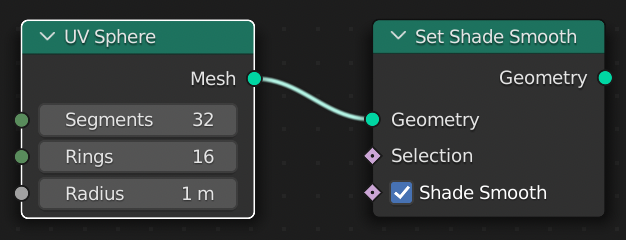
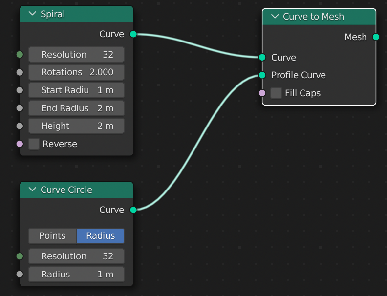
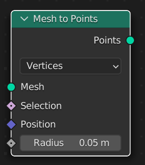
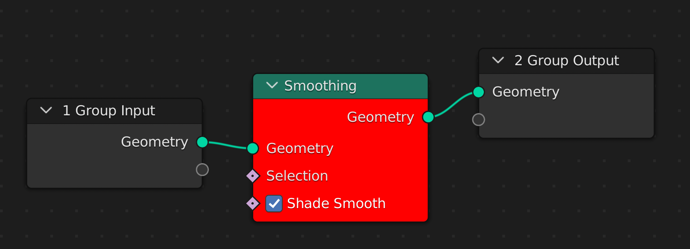
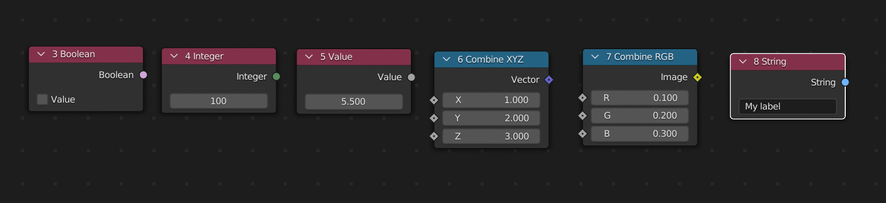
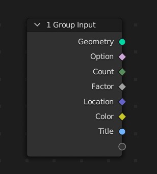
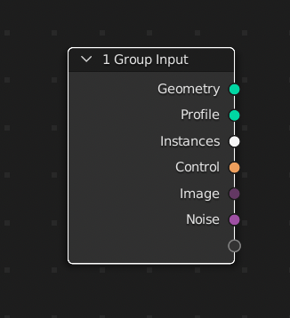
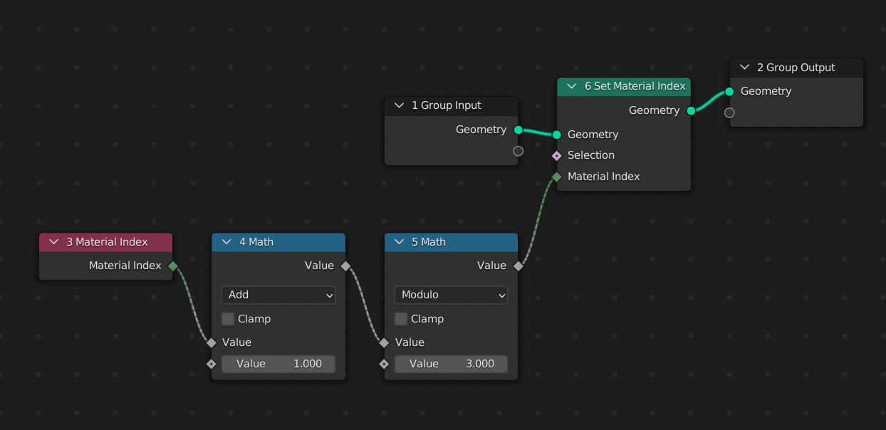
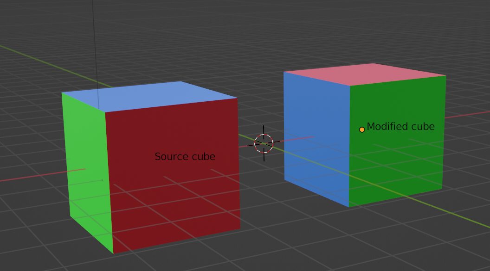

节点#
Linking nodes is a way to program something
In short words#
If you are familiar with building Geometry Nodes in Blender (if it is not the case, you won’t take the maximum benefit of continuing reading this page), you shouldn’t have difficulties with these 4 concepts:
Node
Input socket
Output socket
Link
The geonodes package scripts geometry nodes in the following way:
An output socket of a node is wrapped in a geonodes Data Socket class (Boolean, Float, Mesh, Points,…)
A node is a method of a Data Socket class
When calling a method, a node is created:
one of its input sockets is linked to the calling Data Socket_
the other input sockets are linked with the Data Sockets passed as method arguments
the node parameters are also passed as arguments
geonodes is implemented in two layers:
nodes layer: each geometry node is wrapped in a dedicated class named after its Blender name
data sockets layer: nodes are created through Data Socket classes methods
Layer 1: Nodes classes#
The first layer of geonodes is made of Geometry node wrappers. Instancing a node, simply creates the node. Here the node ‘Math’ is created for the operation Subtract:
from geonodes import nodes
math_node = nodes.Math(operation='SUBTRACT')
The result of this operation can be read through its single output socket whose name is value:
import geonodes as gn
from geonodes import nodes
with gn.Tree("Geometry Nodes") as tree:
math_node = nodes.Math(operation='SUBTRACT')
result = math_node.value
Note that the sockets are the snake_case version of their Blender name, see naming convention.
The nodes can be linked together with the method plug of the input sockets:
import geonodes as gn
from geonodes import nodes
with gn.Tree("Geometry Nodes") as tree:
a = nodes.Integer(9) # Node 'Integer' with 9 as default value
b = nodes.Integer(5) # Node 'Integer' with 5 as default value
subtract = nodes.Math(operation='SUBTRACT')
subtract.inputs[0].plug(a.integer)
subtract.inputs[1].plug(b.integer)
result = subtract.value # 9 - 5
This is an uggly script to simply compute a - b but this is just the underlaying fundation of geonodes.
Layer 2: nodes as methods#
The second layer of geonodes is centered on sockets, more precisely on output sockets.
Output sockets own the data you want to manipulate to create your geometry. Data sockets can be of 3 types:
Values: Boolean, Integer, Float, Vector, Color, String
Geometry: Geometry, Spline, Curve, Mesh, Points, Instances, Volume
Other: Collection, Object, Texture, Image, Material
In the second layer, nodes are not created directly but through methods and properties of the Data Socket classes.
Two ways of linking nodes#
Linking two nodes consists in performing an action defined by the second node on one output of the first node.
For instance, let’s have a look to the two following linked nodes:
The operation ‘Set Shade Smooth’ is performed on the ‘Geometry’ output from the node ‘UV Sphere’. We have then another geometry which is the smoothed sphere.
In standard programming, you would translate that in:
smoothed_sphere = flat_sphere.set_shade_smooth()
Let’s look at another example:
In this example, we have 3 nodes and 2 links. The operation ‘Curve to Mesh’ transforms a curve into a mesh. The scripting would be the same as the previous one:
mesh = curve.to_mesh()
But here we need a second curve, the profile, to perform the operation. Naturally we will pass this curve as an argument:
mesh = curve.to_mesh(profile_curve=circle)
We see the two ways links can be created:
The ‘self’ link: calling a method creates the link from the output socket it operates on to the proper input socket
The argument link: other sockets than the ‘self’ one are linked via method arguments
It does mean that each node as a ‘self’ input socket which will be connected to the output socket calling this method. The other nodes will be connected through arguments.
Nodes parameters and method names#
Some nodes have parameters. Let’s look at the ‘Mesh to Points’ node:
It has a parameter mode to define how the conversion must be made (vertices, edges,…). This parameter is passed as an argument of the method:
import geonodes as gn
with gn.Tree("Geometry Nodes") as tree:
mesh = gn.Mesh.UVSphere()
points = mesh.to_points(mode='EDGES')
Some other nodes are implemented as many times as they are possible values for the parameter. For instance, this is the case for the ‘Math’ node whose parameter “Operation” can take a lot of values (ADD, SUBTRACT, SINE, ARCTAN…).
There is not math method but one method per operation named after this operation. Note that when a math operator exists, it is implemented.
import geonodes as gn
with gn.Tree("Geometry Nodes") as tree:
a = gn.Integer(9)
b = gn.Integer(5)
# The following line will crash if uncommented
# c = a.math(b, operation='SUBTRACT')
c = gn.subtract(a, b) # As global function
c = a.sub(b) # As method of Integer
c = a - b # As operator
Our subtraction is now written very naturally: c = a - b as expected.
#
This is the way geonodes operates:
each output socket of a node is data
a node is an operation performed on a data
Methods
Nodes such as “Set position” are implemented as methods.
Input and output geometries
The output geometry is set with
tree.output_geometry. Similaly, the input geometry can be read withtree.input_geometryimport geonodes as gn with gn.Tree("Geometry nodes") as tree: # The "do nothing" modifier ! tree.output_geometry = tree.input_geometry
安装#
Simply copy the geonodes folder in the modules folder ...blender/scripts/modules/. Note that geonodes is not an addon, simply a python module.
The modules classes and functions are then accessible through a standard import statement:
import geonodes as gn
概览#
Nodes, sockets and classes#
geonodes manages nodes and sockets. Node sockets are data when the nodes are operators working on data. For each socket type, there is a corresponding geonodes class:
Geometry classes:
Geometry
Spline
Curve
Mesh
Instances
Points
Volume
Values
Boolean
Integer
Float
Vector
Color
String
Other
Collection
Object
Texture
Image
Material
A data class makes necessarily reference to a node socket. Operations on data classes are made by creating nodes. The node owning the socket is a property of the data class.
The following example shows how to change the label and the color of the node owning the a Geometry class:
import geonodes as gn
with gn.Tree("Geometry Nodes") as tree:
# Get the input geometry
geo = tree.input_geometry
# Shade smooth
geo.set_shade_smooth()
# Change the node "shade smooth" name and color
geo.node.node_color = "red"
geo.node.label = "Smoothing"
# Output geometry
tree.output_geometry = geo
The resuling tree is the following:
Initializing classes#
Data classes can be created in three ways:
From constant values
From group input
Mesh and Curve constructors
1. Constant initialization#
Value classes can be initialized by passing a value in the class init:
import geonodes as gn
with gn.Tree("Geometry Nodes") as tree:
ok = gn.Boolean(False)
count = gn.Integer(100)
factor = gn.Float(5.5)
vector = gn.Vector((1, 2, 3))
color = gn.Color((.1, .2, .3))
title = gn.String("My label")
The variable correspond to output sockets of the initialization nodes:

2. Group inputs#
Each class implements the class method Input which get the socket from the tree group input.
In the example below we initialized the same variables from group inputs:
import geonodes as gn
with gn.Tree("Geometry Nodes") as tree:
ok = gn.Boolean.Input(False, "Option")
count = gn.Integer.Input(100, "Count")
factor = gn.Float.Input(5.5, "Factor")
vector = gn.Vector.Input((1, 2, 3), "Location")
color = gn.Color.Input((.1, .2, .3), "Color")
title = gn.String.Input("My label", "Title")
The variables represent now the sockets of group input node:
Geometry classes can also be initialized from a group input socket.
In the following example, we use the optional argument description to provide a tool tip to the user.
import geonodes as gn
with gn.Tree("Geometry Nodes") as tree:
curve = gn.Curve.Input("Profile", "The curve profile for converting to mesh")
models = gn.Collection.Input("Instances", "Collection of instances")
control = gn.Object.Input("Control", "Object to use as control")
image = gn.Image.Input("Image", "The input image for the modifier")
texture = gn.Texture.Input("Noise", "Noise texture to use to deform the surface")
The group input is now:
3. Mesh and Curve constructors#
Mesh and Curve classes provide constructors (class methods) to initialize geometry. Basically, the constructors create the nodes in the Geometry Nodes menu Mesh Primitives and Curve Primitives.
import geonodes as gn
with gn.Tree("Geometry Nodes") as tree:
sphere = gn.Mesh.UVSphere(segments=10, rings=5)
tree.output_geometry = sphere
Value classes : single value or array of values#
It is important to understand that value classes such as Float or Vector can represent either a single value or an attribute,
i.e. an array of values (one value per Mesh vertex for instance).
In the example below we create a modifier on a cube having several materials, each face with its own material.
The tree shifts the material index of the faces. The shift is an addition between an array of values mat_indices and a single value offset.
both variables share the same class: Integer.
import geonodes as gn
with gn.Tree("Geometry Nodes") as tree:
# Get the geometry from the modifier object
# Since it is a mesh, we must cast to Mesh to benefit from
# Mesh class methods
cube = gn.Mesh(tree.input_geometry)
# mat_indices represents the 6 material indices of the 6 faces of the cube
mat_indices = cube.material_index
# offset is a single value Integer
offset = gn.Integer(1)
# We can combine the two integers to set the new indices of the cube
cube.set_material_index(material_index=(mat_indices + offset) % 3)
# Let's represent the result
tree.output_geometry = cube
 
Note that in real life, this example would certainly have been written in a more concentrated style, while keeping the same readibility. The following two lines generate the above 6-nodes, 5-links tree:
import geonodes as gn
with gn.Tree("Geometry Nodes") as tree:
cube = tree.input_geometry.mesh
cube.material_index = (cube.material_index + 1) % 3
tree.output_geometry = cube
Geometry nodes implementation#
The Geometry nodes provide methods and properties for geonodes classes. The nodes are implemented into several ways:
constructor, for instance the node “Curve Circle” is implemented as a static method of the Curve class
method, for instance the node “Curve to Mesh” is implemented as the method to_mesh of the class Curve
property, for instance the node “Bounding Box” is implemented as a property of Geometry class.
Since the “Bounding Box” outputs 3 sockets, each socket is itself a property of the Geometry classoperator, for instance the “Math” node gives birth to the standard operators: +, -, * …
The attributes are managed in a specific way which is described in the next section.
In the script below, we see the four ways of how nodes are implemented:
import geonodes as gn
with gn.Tree("Geometry Nodes") as tree:
# Building a torus from two circle: major and minor circle
# Both circle are created by the Circle static method or Curve
# which implement the node "Curve Circle"
# Note that this node outputs two sockets:
# - curve (Curve)
# - center (Vector)
# Hence the method Circle returns the node and not the socket
# One must explicitly get the curve socket
major_radius = 1
minor_radius = .2
torus = gn.Curve.Circle(radius=major_radius) # The major circle
profile = gn.Curve.Circle(radius=minor_radius) # The minor circle
torus = torus.to_mesh(profile_curve=profile) # "Curve to Mesh" node
# Let's get the bound box of the resulting mesh
# And use it the create a socle below the torus
box = torus.bounding_box
box.set_position(offset=(0, 0, -2*minor_radius))
# The + operator between two geometries implements the "Join Geometry" node
tree.output_geometry = torus + box
Returned values#
The principe is the following:
When a node as only one output socket, it returns an instance of the corresponding class. In the following example, since the node “Curve to Mesh” has only one output socket, the method to_mesh returns a class Mesh:
torus = torus.to_mesh(profile_curve=profile)
When a node has several output sockets, it returns the node itself. The user must select his output as a property of the returned node:
import geonodes as gn with gn.Tree("Geometry Nodes") as tree: # The node "Noise texture" returns two sockets # The constructor Noise returns the node, not a socket noise = gn.Texture.Noise() # We cas use the factor socket fac = noise.fac # Or the color socket color = noise.color
版本更新
gn.Texture.Noise被移到了nodes.NoiseTexture
最新的写法：
fac, color = gn.Texture.noise()
特例
Capture Attribute node is a particular case. Even if the node has two output sockets (geometry and attribute),
the method returns the attribute socket. The geometry instance calling the method points on the geometry socket after the call.
See the attributes section for more details.
Creating vs transforming nodes#
A node such as “Curve to Mesh” takes a Curve as input socket et gives a Mesh as output socket.
The output socket must be considered as data which is different from the input socket.
The method creates new data, it follows the sheme: Mesh = Curve.method(...).
On the other hand, a node such as “Set Shade Smooth” is a modifier applied on a geometry.
The output geometry is the same as the input geometry. It has just been transformed by the node.
The method transforms data, it follows the scheme: Geometry.method().
The following piece of code illustrates the creation vs transformation calls:
import geonodes as gn
with gn.Tree("Geometry Nodes") as tree:
# Let's build a torus
# The torus major circle
circle = gn.Curve.Circle(radius=1)
circle.node.node_color = "green"
# ---------------------------------------------------------------------------
# circle : points on the output socket of the node "Curve Circle"
# ---------------------------------------------------------------------------
torus = circle.to_mesh(profile_curve=gn.Curve.Circle(radius=.2))
torus.node.label = "Torus first node"
torus.node.node_color = "red"
# ---------------------------------------------------------------------------
# torus : points on the output socket of the node "Curve to Mesh", renamed "Torus first node"
# circle : didn't change
# ---------------------------------------------------------------------------
torus.set_shade_smooth()
torus.node.label = "Torus second node"
torus.node.node_color = "blue"
# ---------------------------------------------------------------------------
# torus : now points on the output socket of the node "Set Shade Smooth", renamed "Torus second node"
# ---------------------------------------------------------------------------
tree.output_geometry = torus
In the generated tree, we can see that the node property of the torus has changed after the call of set_shade_smooth:
Module presentation#
The geonodes implements two layers:
Nodes layer One class per geometry nodes, for instance AlignEulerToVector wraps the node FunctionNodeAlignEulerToVector The Node class initialization creates the geometry nodes
Sockets layer One class per data type:
Basis data: Boolean, Integer, Float, Vector, Color, String
Geometry : Geometry, Spline, Curve, Mesh, Point, Instance, Volume
Special : Collection, Object, Material, Texture, Image The methods and properties of the sockets are implemented by creating nodes:
import geonodes as gn circle = gn.Mesh.Circle(radius=2.) # creates the node GeometryNodeMeshCircle
At creation time, a node takes two types or arguments:
the input sockets
the node parameters
import geonodes as gn
from geonodes import nodes
# rotation : first node socket
# factor : second socket
# vector : third socket
# axis : first parameter
# pivot_axis : second parameter
node = nodes.AlignEulerToVector(rotation=None, factor=None, vector=None, axis='X', pivot_axis='AUTO')
源码#
In a Blender project, create a Geometry nodes modifier and run the following script
from generator.generator import gen_geonodes
# fpath is the location to where the geonodes folder is located
# within the Blender modules folder
fpath = ".../blender/modules/scripts/modules/geonodes/"
gen_geonodes(fpath)
结构#
geonodes.core#
geonodes.core.node#
Tree : Blender NodeTree wrapper
DataSocket : Root class for socket wrappers
Node : Root class for blender geometry nodes wrappers
Some specific nodes are implemented in this module. They are used by Tree:
GroupInput : Wrapper for node NodeGroupInput.
# The group input is initialized in the Tree Tree.group_input = GroupInput()
GroupOutput : Wrapper for node NodeGroupOutput
# The group output is initialized in the Tree Tree.group_output = GroupOutput()
Viewer : Wrapper for node GeometryNodeViewer
# The viewer is initialized by the Tree when required Tree.viewer = None ... if self.viewer is None: self.viewer = Viewer()
One viewer per tree. Data sockets can use the method to_viewer()
Frame : Wrapper for node NodeFrame
def new_layout(self, label, color): self.layouts.append(Frame(label, color))
SceneTime : Wrapper for GeometryNodeInputSceneTime
Tree.scene_ = None @property def scene(self): if self.scene_ is None: self.scene_ = SceneTime() return self.scene_
geonodes.core.datasockets#
Implements the base class for DataSockets
All the classes are base on geonode.node.DataSocket
For geometry data, only the class Geometry is implemented in this module
The final classes will be created in geonodes.sockets with the following inheritance
Geometry
Spline
Curve
Mesh
Points
Instance
Volume
geonodes.core.colors#
Some colors constants
geonodes.core.arrange#
arrange function locates the nodes to make the whole tree somehow readable It works independantly of the geonodes structure and just take the name of the NodeTree as an argument.
geonodes.nodes.nodes#
All he nodes generated by the generator#
geonodes.nodes.sockets#
One file per data socket class plus functions.py which contains the global functions
geonodes.__init__.py#
The pack __init__ file contains
Generation principle#
The generation module is designed to ease the updates with the new versions of geometry nodes
Step 1#
try to create all the possible nodes by listing all the types in bpy.types:
for type_name in dir(bpy.types):
try:
node = nodes.new(type_name)
except:
continue
# We have a valid type
The legacy nodes are excluded from the scan.
Step 2#
Each node is analyzed by:
Identifying the parameters (non standard attributes)
Three types of parameters are possible:
Non settable parameters, for instance the color selector of an input color node
Enum parameters: str param with a list of valid values
Non enum settable parameters, the resolution of a circle for instance
The settable parameters will be part of the node creation argument
Identifying if the node has “shared sockets”
Shared sockets are sockets of different types but sharing the same name.
Only one socket is enabled at a time, depending upon a “driving parameter”
Example: node FunctionNodeCompare:
Driving parameter : data_type in (‘FLOAT’, ‘INT’, ‘VECTOR’, ‘STRING’, ‘RGBA’)
Input sockets : [‘a’, ‘b’]
a and b are names shared by sockets of type Float, Integer, Vector, String and Color
Renaming sockets homonyms when exist
For instance node ShaderNodeMath has three input sockets named Value. They are renamed value0, value1 and value2
Step 3#
file nodes.py generation in folder geonodes.nodes
The __init__ method of the node class is the concatenation of the input sockets and the settable parameters
for instance, the __init__ method of ShaderNodeMath is:
def __init__(self, value0=None, value1=None, value2=None, operation='ADD'):
The node has 3 sockets and one parameter named operation. The default value ‘ADD’ is the one of the parameter at creation time. When a socket has the value None, it is left unplugged. A socket can be either a value or data socket class. If it is a value, it must be an acceptable default value for the input socket.
An additional argument label is used to allow the user to change the node label:
def __init__(self, value0=None, value1=None, value2=None, operation='ADD', label=None):
Step 4#
Generation of the data sockets classes.
A data socket basically wraps an output node socket. The methods of a data class consist in creating a node and to plug the socket to one input socket of this node.
Example:
Let use x as a Float which is the output socket of a node.
We can write:
y = x ** 3
This will create the node ShaderNodeMath with the following parameters:
node = Math(value0=self, value1=3, operation='POWER')
return node.value
Implementation types
Depending on their behaviors, the nodes can be implented in the following ways:
Constructor
For nodes which don’t transform a socket but create new data
Example: GeometryNodeMeshCircle is implemented as a Mesh constructor
@classmethod
def Circle(cls, vertices=None, radius=None, fill_type='NONE'):
return cls(nodes.MeshCircle(vertices=vertices, radius=radius, fill_type=fill_type).mesh)
Property
For node which return info on data sockets. The properties are kept in local attributes:
self.prop_ = ... node creation
return self.prop_
Example: GeometryNodeBoundBox returns 3 infos on the geometry : bounding_box, min and max